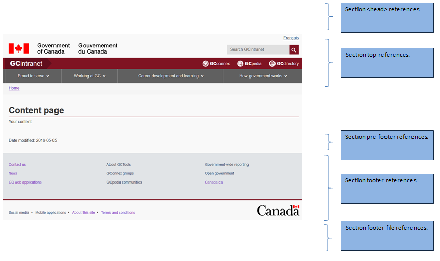
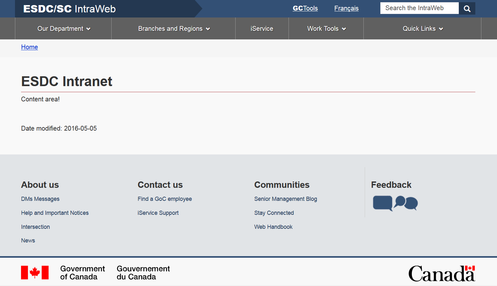

Intranet
Slogan
Note
CDTS implementation
Default templates
Splash page template
Transactional page template
Section menu template
Application templates
Implementing the GCIntranet theme using the CDTS framework in your application
Welcome to the GCIntranet (intranet.canada.ca) implementation guide, you will find below instructions on how to implement the GCIntranet theme using the CDTS. You will also be presented with different scenarios depending on your particular implementation requirements. Please read the following sections carefully before getting started!
If you will be developing your web asset in .NET or JAVA then you can have a look at our sample templates as you follow this guide. Much of the work for implementing the CDTS into the templates has already been done.
Version or run variants
At several points in the implementation guide you will be presented with two options for "version" or "run variants.
- The "version" variant means you will NOT automatically receive any new WET updates. You must implement a "version" in your web asset and add a mechanism to keep this updated as you do your testing for each new WET version. We suggest you use your web.config to store your version variable. At ESDC updating the web.config file in production is much easier than doing a full release. It allows web assets to stay up to date quicker by simply updating the web.config file when the web asset has been tested and confirmed to work with the new WET version. Examples are provided in our .NET and JAVA samples projects.
- The "run" variant means that you will automatically receive all new WET releases with no intervertion on your part using the "run" version.
Please note that whichever decision you make you will ALWAYS receive updates to the GCIntranet theme related to the mega menu or to the GoC activities and initiatives section. Any common changes to the header/footer will be automatically pushed to your web asset. You need to have implemented the latest or two previous versions of the CDTS to obtain updates.
Application templates
Will you need a custom header/footer? Keep in mind this is different than removing or adding certain elements that are allowed as per the C&IA specifications document. Any element that can be implemented using the C&IA specifications document does not require a custom header/footer and is available in the default version of the CDTS. Currently it is advisable to not implement a custom header/footer unless you have permission to do so from your department, TBS or Principal Publisher. If you have permission to do so then follow the instructions for the "Application templates" in the menu on the right.
What will the CDTS manage and how it will affect my web asset
The CDTS is meant to remove the presentation layer from your web asset and instead have it rendered from a central location. Wait I need to change things! The CDTS allows for all customizations that are available in the C&IA specifications document. For example you can still control the language toggle and search or remove the activities and initiatives section through CDTS variables, these are explained in each section below. The CDTS will manage:
- GCIntranet / WET files (CSS, JS and other applicable files)
- GCIntranet Site icon
- GCIntranet header (menu, images, links, search, etc...)
- Pre-content space (for global wide announcements)
- Post-content space (for global wide announcements)
- Government of Canada activities and initiatives section
- GCIntranet footer (menu, links, images, etc...)
Version variant information
If you decide to implement the "version" variant please note that you must implement a way to keep this version number updated through a web.config file or database. Examples are provided in our .NET and JAVA samples projects. We also suggest you keep the version number as a different variable than the CDTS URLs in case it changes in the future. Reasons to use the "version" variant include:
- It allows the deployment of the latest files to be done without impacting the application and/or the files that it uses.
- It allows the application to select the version of the files under the parent folder for the theme they have tested and are comfortable to use.
As you will see below in the guide the various sections/templates of your page will contain a path to the CDTS files and the theme you have choosen. Having these paths and URLs in your configuration file will allow you to consume the version of the files from the CDTS you have approved. A sample CDTS URL would like this in your application:
- [CDTS reference URL]/[theme]/[WET version]/filename-[language].extension
Currently with CDTS v4.0.30 the URL in english for GCIntranet would be:
The "CDTS reference URL", "theme", "WET version" and "language" must be the configurable options in your web asset. As indicated above we suggest using your web.config file, XML config file or database to store these variables. Make sure your web asset uses your new configurable file path.
IMPORTANT NOTE #1: When upgrading your web asset to a higher version we suggest that you also update your backup static files to obtain new versions. Otherwise make sure that your backup static files can be updated separately from your main WET CDTS version. It’s acceptable if your main WET CDTS points to v4_0_30 but your backup static files still point to v4_0_29. If you can keep both updated it is highly recommended to do so but not mandatory. Your backup files can fall behind until you perform a full release, we will notify you if your static files need to be updated. It will be indicated in the email you will receive announcing a new version.
IMPORTANT NOTE #2: The CDTS only updates the latest CDTS version as well as the two previous versions. If you are on an older version of the CDTS you will not receive updates. The purpose of the CDTS is to easily allow you to stay up to date so follow the instructions in this guide carefully. If you fall behind you are negating the main advantage of the CDTS!
CDTS implementation instructions
CDTS page template
In the following section you will find the basic template look that will be used in your web asset. The page is comprised of five sections and four of those will use fall-back static files in case JavaScript is disabled. When JavaScript loads the CDTS will replace the fall-back static files. The sections in your page are:
- Section
<head>for file references - Top section of your page
- Pre-footer section
- Footer section
- Footer file references
All fall-back static files can be found on our main GCPedia page. Whenever you must go through a release cycle you must always grab the latest fall-back static files. These ensure that a basic template is available for users who have Javascript disabled.
For all templates and sections the following JavaScript variable is optional:
- optional - cdnEnv – Use this variable to specify which environment you are currently using.
"cdnEnv": "prod"
Employees at ESDC may use the following variables:
https://cdn-canada.services.gc.qat
"cdnEnv": "qat"
https://s2tst-cdn-canada.sade-edap.prv
"cdnEnv": "nonprod"
https://templates.service.gc.ca
"cdnEnv": "esdcprod"
For all the screenshots below please update in your own code:
- (version) – Insert the version you will be using (ex: v4_0_30) or use rn for the run variant
- (language) – Insert the correct language (language user is browsing in) you will be using (en or fr)
- Add / edit / update the references to the JavaScript variables
subTheme sample look
The following screenshot is the ESDC intranet homepage using the CDTS. The subTheme variable allows you to have a custom look while still having the benefits of the CDTS and WET. If you'd like to use the CDTS but have a custom look then contact the CDTS team to enable this option.
Section <head> references
In the <head> section of your page you will need to perform three changes.
- The first change will be to include the three references to the new GCT files that will perform all the work.
- The second change will be to create the
<noscript>section which will make your page look good if JavaScript is disabled. You will need to load a fall-back static file in the<noscript>section. - The last change will be to add the actual GCT code to perform the write of the template in the
<head>section. The following JavaScript variables can be used in this section:
- optional - cdnEnv – Use this variable to specify which environment you are currently using.
"cdnEnv": "prod"
- Removed in v4.0.31 - optional - jqueryEnv – Use this variable to specify which environment you want to pull the jQuery files from. By default they are loaded locally from the WET build. Otherwise use the following to load from Google CDN:
"jqueryEnv": "external"
- optional - subTheme – This variable is used to display a custom theme for your intranet web asset. You need to contact the CDTS team to enable this option.
"subTheme": "esdc"
Sample:
<!-- Load closure template scripts -->
<script src="https://ssl-templates.services.gc.ca/app/cls/WET/gcintranet/v4_0_29/cdts/compiled/soyutils.js"></script>
<script src="https://ssl-templates.services.gc.ca/app/cls/WET/gcintranet/v4_0_29/cdts/compiled/wet-en.js"></script>
<noscript>
<!-- Write closure fall-back static file -->
<!-- /ROOT/app/cls/WET/gcintranet/v4_0_29/cdts/static/refTop.html -->
<!--#include virtual="/app/cls/WET/gcintranet/v4_0_29/cdts/static/refTop.html" -->
</noscript>
<!-- Write closure template -->
<script>
document.write(wet.builder.refTop({
}));
</script>
Note: Don’t forget to always include in the <noscript> section with the fall-back static file otherwise your page will not degrade gracefully when JavaScript is disabled.
Section top references
In the top section of your page you will need to perform three changes.
- The first one will be to add a new
<div>to wrap the entire top content with an ID of “def-top”. This<div>will start at the top of your page all the way down to the opening<main>element. - The second change will be to include the reference to the fall-back static file in the new
<div>you have created. - The last change will be to add the actual GCT code to perform the write of the template in the top section to replace the new
<div>content once the template is ready. The following JavaScript variables can be used in this section:
- optional - lngLinks – Use this variable to specify where the language toggle link will go. Although this is optional it is usually mandatory to provide the language toggle link.
"lngLinks": [{ "lang": "fr", "href": "content-fr.html", "text": "Français" }] - optional – breadcrumbs – Use this variable to specify the breadcrumbs in your page. Note that if no breadcrumbs are specified the template will insert a link to the home page of the Canada.ca website.
"breadcrumbs": [{ "title": "Home", "href": "https://www.canada.ca/en/index.html" },{ "title": "CDTS", "acronym": "Centrally Deployed Templates Solution", "href": "https://www.canada.ca/en/index.html" }] - optional – showPreContent – This will be used by Principal Publisher to insert content into the pre content space of your page. By default this is ALWAYS shown on all pages. You will need authorization from the Principal Publisher to not include this content in your web asset. If you receive such authorization then you can insert the following code.
- optional – search – By default this is ALWAYS shown on all pages. You will need authorization from the Principal Publisher to not include this content in your web asset. If you receive such authorization then you can insert the following code.
"search": false
- optional – siteMenu – This variable is used to display a custom menu. You need to contact the CDTS team to enable this option.
"siteMenu": true
- optional - subTheme – This variable is used to display a custom theme for your intranet web asset. You need to contact the CDTS team to enable this option.
"subTheme": "esdc"
- optional – intranetTitle – This variable is used to display a custom intranet title. Before proceeding please ensure you have permission from your department, TBS or Principal Publisher. This variable does not conform to the C&IA specifications document.
"intranetTitle": [{ "href": "http://esdc.prv/en/index.shtml", "text": " IntraWeb", "boldText" : "ESDC/SC", "acronym": "Employment and Social Development Canada / Service Canada" }] - Optional - GCToolsModal - This variable is used to make the GC Tools links in the header into a modal dialogue box. The default it set to false.
"GCToolsModal": true
Sample:
<div id="def-top">
<!-- Write closure fall-back static file -->
<!-- /ROOT/app/cls/WET/gcintranet/v4_0_29/cdts/static/top-en.html -->
<!--#include virtual="/app/cls/WET/gcintranet/v4_0_29/cdts/static/top-en.html" -->
</div>
<!-- Write closure template -->
<script>
var defTop = document.getElementById("def-top");
defTop.outerHTML = wet.builder.top({
"lngLinks": [{
"lang": "fr",
"href": "content-fr.shtml",
"text": "Français"
}],
"GCToolsModal": true
});
</script>
Note: Don’t forget the <div> that is wrapped around your fall-back static file is named “def-top” otherwise your page will not display correctly.
Section pre-footer references
In the pre-footer section of your page you will need to perform three changes.
- The first one will be to add a new
<div>to wrap all the pre-footer content with an ID of “def-prefooter”. This<div>will start directly below the last element in your content. It is important that you DON’T close your</main>element yet! - The second change will be to include the reference to the fall-back static file in the new
<div>you have created. - The last change will be to add the actual GCT code to perform the write of the template in the pre-footer section to replace the new
<div>content once the template is ready. The following JavaScript variables can be used in this section:
- optional – showPostContent – This will be used by the Principal Publisher to insert content into the post content space of your page. By default this is ALWAYS shown on all pages. You will need authorization from the Principal Publisher to not include this content in your web asset. If you receive such authorization then you can insert the following code.
"showPostContent": false
- optional – screenIdentifier – Use this variable to specify the screen identifier of the web application.
"screenIdentifier": "0123456789"
- optional – dateModified – Use this variable to specify the date modified of your page. If you prefer to use the version identifier technique, use the variable below. Note that you must use one option or the other.
"dateModified": "2015-10-09"
- optional – verisonIdentifier – Use this variable to specify the version of the web application instead of dateModified.
"versionIdentifier": "0123456789"
- optional – pagedetails – Use this variable to remove the
<div class="pagedetails">when using the server message page template."pagedetails": false
Sample:
<div id="def-preFooter">
<!-- Write closure fall-back static file -->
<!-- /ROOT/app/cls/WET/gcintranet/v4_0_29/cdts/static/preFooter-en.html -->
<!--#include virtual="/app/cls/WET/gcintranet/v4_0_29/cdts/static/preFooter-en.html" -->
</div>
<!-- Write closure template -->
<script>
var defPreFooter = document.getElementById("def-preFooter");
defPreFooter.outerHTML = wet.builder.preFooter({
"dateModified": "2016-05-05"
});
</script>
Note: Don’t forget the <div> that is wrapped around your fall-back static file is named “def-preFooter” otherwise your page will not display correctly. Also it’s important that you close the <main> element after the pre-footer as shown in the sample code above.
Section footer references
In the footer section of your page you will need to perform three changes.
- The first one will be to add a new
<div>to wrap all the footer content with an ID of “def-footer”. This<div>will start immediately after your</main>element has been closed. - The second change will be to include the reference to the fall-back static file in the new
<div>you have created. - The last change will be to add the actual GCT code to perform the write of the template in the footer section to replace the new
<div>content once the template is ready. The following JavaScript variables can be used in this section:
- optional – contactLinks – This will be used to customize the contact us link located in the footer of the page.
"contactLinks": [{ "href": "#" }] - optional – showFeatures – This will be used by the Principal Publisher to insert GoC activities and initiatives into your page. By default this is ALWAYS shown on all pages. You will need authorization from the Principal Publisher to not include this content in your web asset. If you receive such authorization then you can insert the following code.
"showFeatures": false
- optional - subTheme – This variable is used to display a custom theme for your intranet web asset. You need to contact the CDTS team to enable this option.
"subTheme": "esdc"
Sample:
<div id="def-footer">
<!-- Write closure fall-back static file -->
<!-- /ROOT/app/cls/WET/gcintranet/v4_0_29/cdts/static/footer-en.html -->
<!--#include virtual="/app/cls/WET/gcintranet/v4_0_29/cdts/static/footer-en.html" -->
</div>
<!-- Write closure template -->
<script>
var defFooter = document.getElementById("def-footer");
defFooter.outerHTML = wet.builder.footer({
});
</script>
Note: Don’t forget the <div> that is wrapped around your fall-back static file is named “def-footer” otherwise your page will not display correctly.
Section footer file references
The following JavaScript variables can be used in this section:
Exit script
- Optional – exitScript – Use this variable if you want to warn the users they are leaving a secured session.
"exitScript": true
- Optional – exitURL – Specify the URL where the users will be redirected to leave their secured session.
"exitURL": "#"
- Optional – exitMsg – Specify the message the users will get before being redirected and leaving their secured session.
"exitMsg": "You are about to leave a secure site, do you wish to continue?"
- Optional – cancelMsg – Specify the text for the button (Cancel) the users will get if they want to close the exitMsg window.
"cancelMsg": "cancel"
- Optional – yesMsg – Specify the text for the button (Yes) the users will get if they want to close the exitMsg window.
"yesMsg": "yes"
- Optional – exitDomains – Specify the additional domains that should not be checked for secure exit.
"exitDomains": "#"
- Optional – displayModal – Use this variable if you want to skip the modal dialog to confirm the exit notice. Keep in mind this will not display the exit notice to the user.
"displayModal": false
Other variables
- optional - jqueryEnv – Use this variable to specify which environment you want to pull the jQuery files from. By default they are loaded locally from the WET build. Otherwise use the following to load from Google CDN:
"jqueryEnv": "external"
Sample:
<script>
document.write(wet.builder.refFooter({
}));
</script>
Splash page references
In the <head> section of the splash page you will need to perform three changes.
- The first change will be to include the two references to the new GCT files that will perform all the work.
- The second change will be to create the
<noscript>section which will make your page look good if JavaScript is disabled. You will need to load a fall-back static file in the<noscript>section. - The last change will be to add the actual GCT code to perform the write of the template in the
<head>section.
Sample:
<!-- Load closure template scripts -->
<script src="https://ssl-templates.services.gc.ca/app/cls/WET/gcintranet/v4_0_29/cdts/compiled/soyutils.js"></script>
<script src="https://ssl-templates.services.gc.ca/app/cls/WET/gcintranet/v4_0_29/cdts/compiled/wet-en.js"></script>
<noscript>
<!-- Write closure fall-back static file -->
<!-- /ROOT/app/cls/WET/gcintranet/v4_0_29/cdts/static/splashTop.html -->
<!--#include virtual="/app/cls/WET/gcintranet/v4_0_29/cdts/static/splashTop.html" -->
</noscript>
<!-- Write closure template -->
<script>
document.write(wet.builder.splashTop({
}));
</script>
Note: Don’t forget to always include in the <noscript> section with the fall-back static file otherwise your page will not degrade gracefully when JavaScript is disabled.
- Please note that for the intranet.canada.ca theme, there is only one splash page with English first, so make sure to use the wet-en.js file.
In the <body> section of your page you will need to perform three changes.
- The first one will be to add a new
<div>to wrap all the content with an ID of “splashContent”. This<div>will start immediately after your<body>element has been opened. - The second change will be to include the reference to the fall-back static file in the new
<div>you have created. - The last change will be to add the actual GCT code to perform the write of the template in the body section to replace the new
<div>content once the template is ready. The following JavaScript variables can be used in this section:
- mandatory – indexEng – This variable indicates what the URL for the home page in English is.
"indexEng": "https://www.canada.ca/en/index.html"
- mandatory – indexFra – This variable indicates what the URL for the home page in French is.
"indexFra": "https://www.canada.ca/fr/index.html"
- mandatory – termsEng – This variable indicates what the URL for the terms and conditions page in English is.
"termsEng": "https://www.canada.ca/en/transparency/terms.html"
- mandatory – termsFra – This variable indicates what the URL for the terms and conditions page in French is.
"termsFra": "https://www.canada.ca/fr/transparence/avis.html"
- optional – nameEng – This variable is used to brand the splash page with the web asset’s name (in English). If not used, the default “Government of Canada” will appear.
"nameEng": "My web asset"
- optional – nameFra – This variable is used to brand the splash page with the web asset’s name (in French). If not used, the default “Gouvernement du Canada” will appear.
"nameFra": "Mon actif Web"
Sample:
<div id="splashContent">
<!-- Write closure fall-back static file -->
<!-- /ROOT/app/cls/WET/gcintranet/v4_0_27/cdts/static/splash.html -->
<!--#include virtual="/app/cls/WET/gcintranet/v4_0_27/cdts/static/splash.html" -->
<!-- Write closure template -->
<script>
var contentSplash = document.getElementById("splashContent");
contentSplash.innerHTML = wet.builder.splash({
"indexEng": "https://intranet.canada.ca/index-eng.asp",
"indexFra": "https://intranet.canada.ca/index-fra.asp",
"termsEng": "https://intranet.canada.ca/terms-avis-eng.asp",
"termsFra": "https://intranet.canada.ca/terms-avis-fra.asp",
"nameEng": "My web asset",
"nameFra": "Mon actif web"
});
</script>
</div>
Transactional page references
Transactional pages are to be used under specific scenarios as detailed in section 6.5 of the C&IA specifications document. Extract:
- Users are engaged in a transactional process where allowing them to navigate away from the current page would interrupt the intended flow and result in errors, loss of data or accidental termination of the session
If you web asset meets those requirements then you can apply the following steps:
The Section <head> references don't change.
The Section top references are the same except for the following modifications:
- mandatory – search – This variable is used to hide the search.
"search": false
- mandatory – siteMenu – This variable is used to hide the site menu.
"siteMenu": false
- mandatory – breadcrumbs – Note that in a transactional scenario, the breadcrumbs are replaced with a link to exit the transaction that directs users to a safe point where they can abandon the current transaction and restart it should they wish.
"breadcrumbs": [{ "title": "Exit secure transaction", "href": "https://www.canada.ca/en/index.html" }] - mandatory – showPreContent – This variable is used to hide the content inserted into the pre content space of your page.
"showPreContent": false
Sample:
<div id="def-top">
<!-- Write closure fall-back static file -->
<!-- /ROOT/app/cls/WET/gcintranet/(version)/cdts/static/top-(language).html -->
<!--#include virtual="/app/cls/WET/gcintranet/v4_0_27/cdts/static/top-(language).html" -->
</div>
<!-- Write closure template -->
<script>
var defTop = document.getElementById("def-top");
defTop.outerHTML = wet.builder.top({
"search": false,
"siteMenu": false,
"lngLinks": [{
"lang": "fr",
"href": "content-fr.shtml",
"text": "Français",
}],
"showPreContent": false
});
</script>
The Section pre-footer references are the same except for the following modifications:
- mandatory – showPostContent – This variable is used to hide the content inserted into the post content space of your page.
- "showPostContent": false
Sample:
<div id="def-preFooter">
<!-- Write closure fall-back static file -->
<!-- /ROOT/app/cls/WET/gcintranet/(version)/cdts/static/preFooter-(language).html -->
<!--#include virtual="/app/cls/WET/gcintranet/v4_0_27/cdts/static/preFooter-(language).html" -->
</div>
<!-- Write closure template -->
<script>
var defPreFooter = document.getElementById("def-preFooter");
defPreFooter.outerHTML = wet.builder.preFooter({
"dateModified": "2016-05-05",
"showPostContent": false
});
</script>
The Section footer references are the same except for the following modifications:
- mandatory – showFooter – This variable is used to hide the content inside the footer.
"showFooter": false
- mandatory – showFeatures – This variable is used to hide GoC activities and initiatives.
"showFeatures": false
- optional – contactLinks – This variable will override the default contact link located in the footer section of your page. If no variable is specified then the default link will be displayed. Otherwise you can use the following code to include your custom contact us link.
"contactLinks": [{ "href": "#" }] - optional – termsLink – This variable will override the “Terms & conditions” link located in the footer section of your page. If no variable is specified then the default link will be displayed. Otherwise you can use the following code to include your custom link.
"termsLink": "https://www.canada.ca/en/transparency/terms.html"
- optional – privacyLink – This variable will override the “Privacy” link located in the footer section of your page. If no variable is specified then the default link will be displayed. Otherwise you can use the following code to include your custom link.
"privacyLink": "https://www.canada.ca/en/transparency/privacy.html"
- optional - subTheme – This variable is used to display a custom theme for your intranet web asset. You need to contact the CDTS team to enable this option.
"subTheme": "esdc"
Sample:
<!-- Write closure template -->
<script>
var defFooter = document.getElementById("def-footer");
defFooter.outerHTML = wet.builder.footer({
"showFeatures": false
});
</script>
The Section footer file references don't change.
Section menu references
If you plan on using the section menu on some of your pages, follow these steps:
The Section <head> references don't change.
The Section top references are the same except for the following modifications:
- mandatory – topSecMenu – Variable used to add the bypass block
"topSecMenu": true
- Add two unclosed
<div>after the GCT code above and immediately before the opening<main>element.- The first
<div>must have a class named “container” - The second
<div>must have a class named “row”
- The first
Sample:
<div id="def-top">
<!-- Write closure fall-back static file -->
<!-- /ROOT/app/cls/WET/gcintranet/(version)/cdts/static/secMenuTop-en.html -->
<!--#include virtual="/app/cls/WET/gcintranet/v4_0_27/cdts/static/secMenuTop-en.html" -->
</div>
<!-- Write closure template -->
<script>
var defTop = document.getElementById("def-top");
defTop.outerHTML = wet.builder.top({
"topSecMenu": true,
"lngLinks": [{
"lang": "fr",
"href": "sectionmenu-fr.shtml",
"text": "Français"
}]
});
</script>
The Section pre-footer references don't change.
Immediately after the closing <main> element, you will need to perform 4 changes.
- The first one will be to add a new
<nav>element to wrap the entire section menu(s). This<nav>will start at the bottom of your page immediately after the closing<main>element. - The second change will be to include the reference to the fall-back static file in the new
<nav>you have created. - The third change will be to add the actual GCT code to perform the write of the template in the nav section to replace the new
<nav>content once the template is ready. The following JavaScript variables can be used in the list below. - The last change will be to close the two
<div>you previously opened.
- mandatory – sectionName – This variable will be used to display the heading(s) of the section menu(s).
"sectionName": "Section name"
- mandatory – menuLinks – This variable will be used to display the links in the menu.
"menuLinks": [{ "href": "#", "text": "Link 1" }] - optional – subLinks – This variable will be used to display the sub-links in the menu. You can also add
"newWindow": trueif you want the link to open in a new window."subLinks": [{ "subhref": "#", "subtext": "Link 1", "newWindow": true }]
Please note that although it’s possible to have multiple secondary menus, only one menu should be used.
Sample:
<nav class="wb-sec col-md-3 col-md-pull-9" typeof="SiteNavigationElement" id="wb-sec" role="navigation">
<!-- Write closure fall-back static file -->
<!-- /ROOT/app/cls/WET/gcintranet/v4_0_27/cdts/static/secMenu-en.html -->
<!--#include virtual="/app/cls/WET/gcintranet/v4_0_27/cdts/static/secMenu-en.html" -->
</nav>
<!-- Write closure template -->
<script>
var secondarymenu = document.getElementById("wb-sec");
secondarymenu.innerHTML = wet.builder.secmenu({
"sections": [{
"sectionName": "[Topic - Local navigation]",
"menuLinks": [{
"href": "#",
"text": "Link 1",
"subLinks": [{
"subhref": "#11a",
"subtext": "Link 1.1 a)"
}, {
"subhref": "#11b",
"subtext": "Link 1.1 b)"
}, {
"subhref": "#11c",
"subtext": "Opens in a new window",
"newWindow": true
}, {
"subhref": "#11d",
"subtext": "Link 1.1 d)"
}]
}, {
"href": "#",
"text": "Link 2"
}, {
"href": "#",
"text": "Opens in a new window",
"newWindow": true
}, {
"href": "#",
"text": "Link 4"
}]
}]
});
</script>
The Section footer references don't change.
The Section footer file references don't change.
Section appTop references
You will replace the Section top references with the following:
- The first one will be to add a new
<div>to wrap the entire top content with an ID of “def-top”. This<div>will start at the top of your page all the way down to the opening<main>element. - The second change will be to include the reference to the fall-back static file in the new
<div>you have created. IMPORTANT: The appTop-(language).html file contains instructions, please carefully review the comments to ensure you have the proper look when JavaScript is disabled. - The last change will be to add the actual GCT code to perform the write of the template in the top section to replace the new
<div>content once the template is ready. The following JavaScript variables can be used in this section:
- mandatory - appName – Use this variable to specify the application name.
"appName": "Application Name"
- optional – appUrl – Use this variable to provide a link on your appName.
"appUrl": "#"
- optional - lngLinks – Use this variable to specify where the language toggle link will go.
"lngLinks": [{ "lang": "fr", "href": "content-fr.html", "text": "Français" }] - optional - secure – Use this variable to display the lock icon beside the application name
"secure": true
- optional - signIn – Use this variable to add a link for the sign in button
"signIn": [{ "href": "#" }] - optional - signOut – Use this variable to add a link for the sign out button
"signOut": [{ "href": "#" }] - optional – search – This variable is used to hide the search.
"search": false
- optional – customSearch – This variable is used to display a custom search. You need to contact the CDTS team to enable this option.
"customSearch": "customSearch"
- optional – siteMenu – This variable is used to hide the site menu.
"siteMenu": false
- optional – menuPath – This variable is used to display a custom menu. Although you don't need to we suggest you contact the CDTS team to enable this option. If you have done this before then simply provide the URL to your valid menu file to enable this option. You can copy the format in the sample custom menu file provided below in our sample.
"menuPath": "https://ssl-templates.services.gc.ca/app/cls/WET/gcintranet/(version)/cdts/ajax/custommenu-eng.html"
- optional – menuLinks – This variable will be used to create a top navigation menu, it will override the menuPath variable if provided. You can also create submenu items.
"menuLinks": [{ "href": "#", "text": "Link 1", "subLinks": [{ "subhref": "#", "subtext": "SubLink 1" },{ "subhref": "#", "subtext": "SubLink 2" }] },{ "href": "#", "text": "Link 2" },{ "href": "#", "text": "Link 3" }] - optional - subLinks - This variable is used with
menuLinksto create a sub-menu in the main menu. Theidvalue is manditory when using asubLinksarray."menuLinks": [{ "href": "https://canada.ca/link1.html", "text": "Link 1" }, { "href": "https://canada.ca/link2.html", "id": "submenu1", "subLinks": [{ "subhref": "#", "subtext": "SubLink 1" },{ "subhref": "#", "subtext": "SubLink 2" }] },{ "href": "https://canada.ca/link3.html", "text": "Link 3" }] - optional – showPreContent – This will be used by Principal Publisher to insert content into the pre content space of your page. By default this is ALWAYS shown on all pages. You will need authorization from the Principal Publisher to not include this content in your web asset. If you receive such authorization then you can insert the following code.
"showPreContent": false
- optional – breadcrumbs – Use this variable to specify the breadcrumbs in your page. Note that if no breadcrumbs are specified the application template will not insert a default link.
"breadcrumbs": [{ "title": "Home", "href": "https://www.canada.ca/en/index.html" },{ "title": "CDTS", "acronym": "Centrally Deployed Templates Solution", "href": "https://www.canada.ca/en/index.html" }] - optional - subTheme – This variable is used to display a custom theme for your intranet web asset. You need to contact the CDTS team to enable this option.
"subTheme": "esdc"
- optional – topSecMenu – This variable is used to add the bypass block to skip to the section menu. It must be set to true when you have a section menu.
"topSecMenu": true
- optional – intranetTitle – This variable is used to display a custom intranet title. Before proceeding please ensure you have permission from your department, TBS or Principal Publisher. This variable does not conform to the C&IA specifications document.
"intranetTitle": [{ "text": "Custom title", "url": "#" }]
We have not provided sample code images for the application templates as there are too many options. Instead please see our application template sample pages that we keep updated. It has all the different scenarios listed above.
Note: Don’t forget the <div> that is wrapped around your fall-back static file is named “def-top” otherwise your page will not display correctly. Also note that when using the application templates you will use wet.builder.appTop instead of wet.builder.top in your JavaScript code.
Section appFooter references
So you want a custom footer? Before proceeding please ensure you have permission from your department, TBS or Principal Publisher. The changes below DO NOT follow the C&IA specifications document. Still want to continue? Sounds good, follow these steps:
You will replace the Section footer references with the following:
- The first one will be to add a new
<div>to wrap all the footer content with an ID of “def-footer”. This<div>will start immediately after your</main>element has been closed. - The second change will be to include the reference to the fall-back static file in the new
<div>you have created. IMPORTANT: The appFooter-(language).html file contains instructions, please carefully review the comments to ensure you have the proper look when JavaScript is disabled. - The last change will be to add the actual GCT code to perform the write of the template in the footer section to replace the new
<div>content once the template is ready. The following JavaScript variables can be used in this section:
- optional – globalNav – This variable will override the default footer and display the global navigation menu for Canada.ca in the footer as a list of links. See sample URL below for an example.
- "globalNav": true
- optional – footerSections – This variable will create a custom set of columns for your footer links. See sample URL below for an example.
"footerSections": [{ "href": "#", "text": "Link 1" },{ "href": "#", "text": "Link 2" }] - optional – contactLinks – This variable will override the default contact link located in the footer section of your page. If no variable is specified then the default link will be displayed. Otherwise you can use the following code to include your custom contact us link.
"contactLinks": [{ "href": "#" }] - optional – termsLink – This variable will override the “Terms & conditions” link located in the footer section of your page. If no variable is specified then the default link will be displayed. Otherwise you can use the following code to include your custom link.
"termsLink": "https://www.canada.ca/en/transparency/terms.html"
- optional – privacyLink – This variable will override the “Privacy” link located in the footer section of your page. If no variable is specified then the default link will be displayed. Otherwise you can use the following code to include your custom link.
"privacyLink": "https://www.canada.ca/en/transparency/privacy.html"
- optional - subTheme – This variable is used to display a custom theme for your intranet web asset. You need to contact the CDTS team to enable this option.
"subTheme": "esdc"
- optional – showFeatures – This will be used by the Principal Publisher to insert GoC activities and initiatives into your page. By default this is ALWAYS shown on all pages. You will need authorization from the Principal Publisher to not include this content in your web asset. If you receive such authorization then you can insert the following code.
"showFeatures": false
IMPORTANT: You can only use one variable for the footer appearance. The globalNav variable will overwrite the footerSections variable if both are provided. If you don't provide globalNav or footerSections then the default footer from the transactional template will be displayed.
We have not provided sample code images for the application templates as there are too many options. Instead please see our application template sample pages that we keep updated. It has all the different scenarios listed above.
Note: Don’t forget the <div> that is wrapped around your fall-back static file is named “def-footer” otherwise your page will not display correctly. Also note that when using the application templates you will use wet.builder.appFooter instead of wet.builder.footer in your JavaScript code.